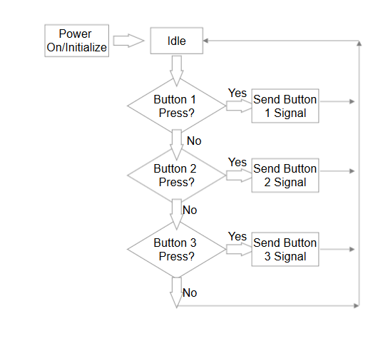

This is the Block Diagram for the usage of the mouse. Refer to the Photo Journal to see the operation of the 3 switches. The Optical Sensor is far more complicated - refer to the diagrams below:
AmazonBasics Wireless Mouse with Nano Receiver
This is the Block Diagram for the usage of the mouse. Refer to the Photo Journal to see the operation of the 3 switches. The Optical Sensor is far more complicated - refer to the diagrams below:
Here we can see how the optical sensor captures the light from the LED.
Here we can see how the optical sensor "fills" in each pixel and sends the appropriate pixel information to the chip
Here we can see what 2 button presses in a row looks like. We can see the voltage going from GND to about 1.5V when the SPST switch is pushed down.
Here we can see what happens when the rotary encoder starts turning, incrementing slowly. The voltage spikes up to around 2.3V whenever a rotation is completed. As we can see, when the rotation is fast the waveform "looks" almost like a DC current.
Here we can see the LED starting off from idle and when there is motion detected under the optical sensor, the LED activates. The initial voltage is much higher than the normal voltage, spiking to almost 4.5V. It then oscilates between 1.9V and 3.3V, as the LED is flickering on and off during the "ready" state.
Here we can see the LED coming back from the "ready" state to the idle state. Notice that this is a close up from the previous 2 waveforms - the increments are now 200mV instead of 2V. We can clearly see even while idle the LED has a voltage of around 160mV.